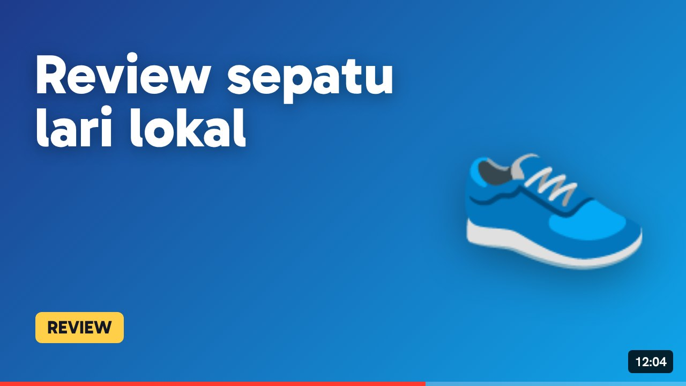
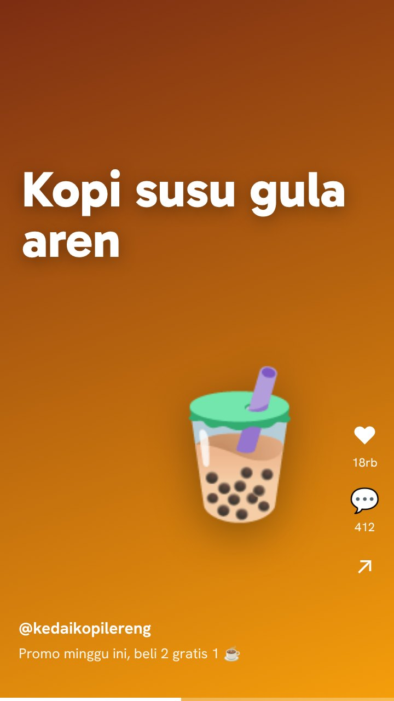
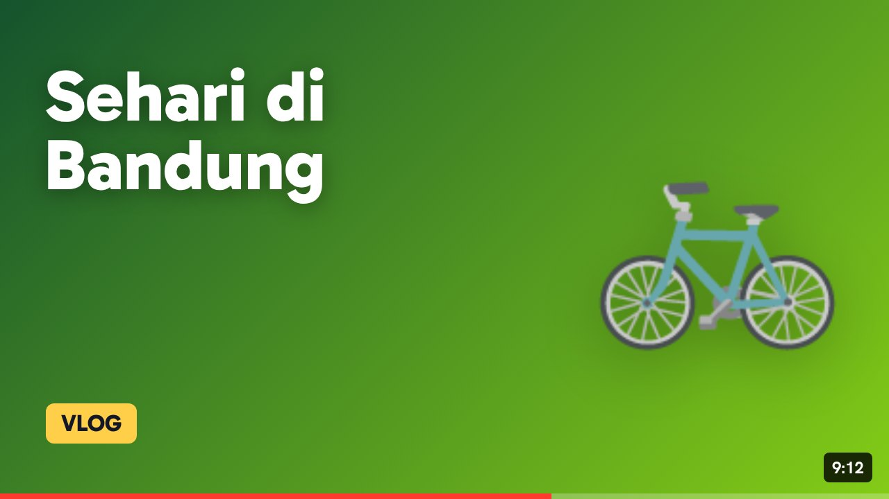
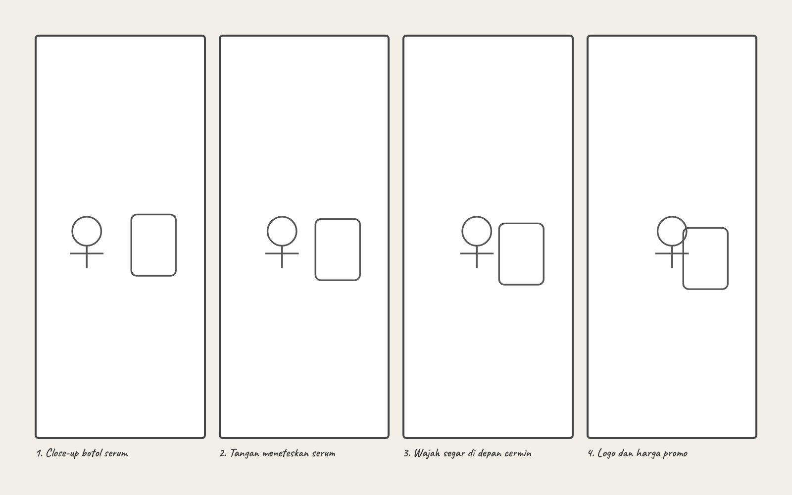
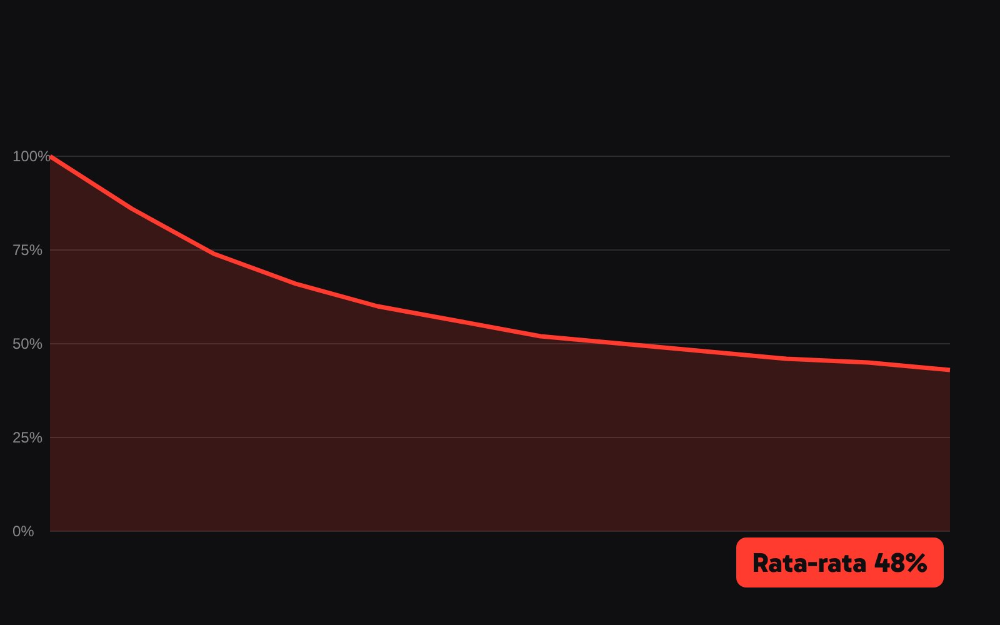
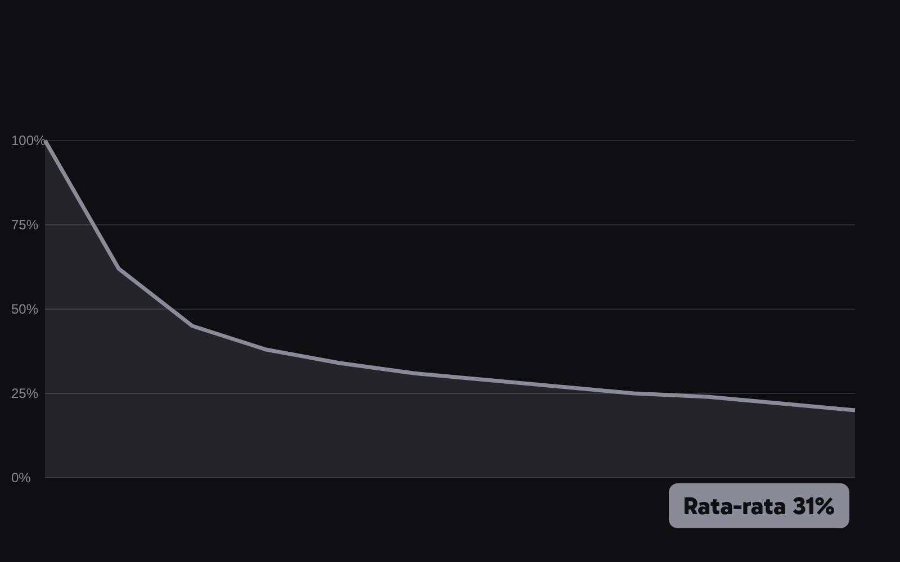

Review sepatu lari lokal
YouTubeYouTube, 12 menit. Retensi rata-rata naik dari 31% ke 48%.

Video Editor
Video editor yang bikin konten short-form ditonton sampai habis. Dua tahun mengedit untuk UMKM dan kreator di Instagram dan YouTube.
Sedang tampil:
Terbuka untuk posisi Video Editor di creative agency, Jakarta
YouTube, 12 menit. Retensi rata-rata naik dari 31% ke 48%.

Instagram Reels, 28 detik. 180 ribu views dalam seminggu.

YouTube, 9 menit. Color grading dan sound design.

Perencanaan shot sebelum produksi untuk brand skincare.



Geser untuk membandingkan sebelum dan sesudah.
48%retensi rata-rata, naik dari 31%. Waktu tonton per video naik 1,6 kali dalam 2 bulan.
Sisa halaman sengaja kami sembunyikan. Mau lihat versi lengkapnya? Chat kami, demo penuh kami kirim lewat WhatsApp.